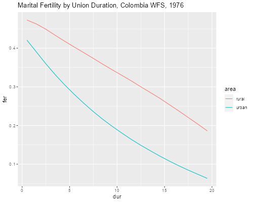

<h2 id="the-page-model-of-marital-fertility">The Page Model of Marital
Fertility</h2>
<p>We apply Page’s model of marital fertility by age and duration to
study urban-rural differentials in Colombia, following essentially the
procedures in Rodríguez and Cleland (1980).</p>
<p>We will work with an extract from the 1976 WFS that has the dates of
R’s birth, first union and interview, the birth history, and type of
place of residence.</p>

{% include srtabs.html %}

<pre class='stata'>. use https://grodri.github.io/datasets/cofertx, clear
(COSR02 extract)
</pre>
<pre class='r'>> library(haven)
> co &lt;- read_dta("https://grodri.github.io/datasets/cofertx.dta")
</pre>
<h3 id="events-and-exposure">Events and Exposure</h3>
<p>We will focus on fertility in the three-years before the interview. A
woman starts contributing events and exposure 36 months before the
interview or when she enters a first union, whichever occurs later. We
create the variables <code>bot</code> and <code>top</code> to mark the
start and end of exposure.</p>
<pre class='stata'>. gen bot = v007 - 36

. replace bot = m012 if m012 > bot
(2,531 real changes made)

. gen top = v007 - 1 

. drop if bot >= top // no in-union exposure
(2,088 observations deleted)
</pre>
<pre class='r'>> library(dplyr)
> co &lt;- mutate(co,
+   bot = ifelse(m012 > v007 - 36, m012, v007 - 36),
+   top = v007 - 1) |> 
+ filter(bot &lt; top)
</pre>
<p>The next step is to count births in the window, occurring between
<code>bot</code> and <code>top</code> (the month before the interview).
The WFS coded the dates of birth of up to 24 children in variables
called <code>b012 b022 b032 ... b242</code>. We loop by variable and use
<span class="stata">a local macro zj</span><span
class="r"><code>paste()</code></span>to construct the names with
zero-padded birth numbers.</p>
<pre class='stata'>. gen births = 0

. forvalues j = 1/24 {
  2.   local zj = "`j'"
  3.   if `j' &lt; 10 local zj = "0`j'"
  4.   quietly replace births = births + 1 if b`zj'2 >= bot &amp; b`zj'2 &lt;= top
  5. }
</pre>
<pre class='r'>> co$births &lt;- 0
> for(j in 1:24) {      
+   name = paste(ifelse(j &lt; 10, "b0","b"), j, "2", sep="")
+   co$births &lt;- co$births + (co[,name] >= co$bot &amp; co[,name] &lt;= co$top)
+ }
</pre>
<p>Each woman is exposed for exactly 36 months unless she married in the
last three years, in which case we take the difference between the dates
of marriage and interview. (One could count only half a month of
exposure for the calendar month of marriage, but I will ignore this
refinement, partly because we do count all births in that calendar month
anyway.) We also need the midpoint of the window, so we can compute age
and duration since first union at that time.</p>
<pre class='stata'>. gen expo = (top - bot + 1)/12

. gen mid = (bot + top)/2

. gen age = (mid - v008)/12

. gen dur = (mid - m012)/12
</pre>
<pre class='r'>> co &lt;- mutate(co,
+   expo = (top - bot + 1)/12,
+   mid = (bot + top)/2,
+   age = (mid - v008)/12,
+   dur = (mid - m012)/12)
</pre>
<h3 id="regression-analysis">Regression Analysis</h3>
<p>Next we use our handy function to compute natural fertility, and
calculate an offset equal to the log of natural fertility times exposure
time</p>
<pre class='stata'>. egen nf = natfer(age)

. gen os = log(nf * expo)
</pre>
<pre class='r'>> library(nuptfer)
> co &lt;- mutate(co,
+   nf = natfer(age),
+   os = log(nf * expo))
</pre>
<p>All that remains is to fit the model using two terms to represent the
effects of urban residence: a dummy variable for the spacing effect and
an interaction with duration for the limiting effect <span
class="stata">(which I create to get a simpler name).</span></p>
<pre class='stata'>. gen urban = v702 == 1

. gen urbanXdur = urban * dur

. poisson births dur urban urbanXdur, offset(os)

Iteration 0:   log likelihood = -2881.5137  
Iteration 1:   log likelihood = -2878.5968  
Iteration 2:   log likelihood =  -2878.587  
Iteration 3:   log likelihood =  -2878.587  

Poisson regression                                      Number of obs =  3,290
                                                        LR chi2(3)    = 319.95
                                                        Prob > chi2   = 0.0000
Log likelihood = -2878.587                              Pseudo R2     = 0.0526

─────────────┬────────────────────────────────────────────────────────────────
      births │ Coefficient  Std. err.      z    P>|z|     [95% conf. interval]
─────────────┼────────────────────────────────────────────────────────────────
         dur │  -.0254673   .0050656    -5.03   0.000    -.0353958   -.0155388
       urban │  -.0968007   .0738112    -1.31   0.190     -.241468    .0478666
   urbanXdur │  -.0466704   .0074747    -6.24   0.000    -.0613205   -.0320203
       _cons │   .0077587   .0559107     0.14   0.890    -.1018243    .1173417
          os │          1  (offset)
─────────────┴────────────────────────────────────────────────────────────────
</pre>
<pre class='r'>> co &lt;- mutate(co, urban = as.numeric(v702 == 1)) # 1=urban
> m &lt;- glm(births ~ dur * urban + offset(os), 
+   data = co, family = poisson)
> coef(summary(m))
                Estimate  Std. Error   z value     Pr(>|z|)
(Intercept)  0.007758676 0.055910722  0.138769 8.896327e-01
dur         -0.025467276 0.005065645 -5.027449 4.970466e-07
urban       -0.096800703 0.073811211 -1.311463 1.897012e-01
dur:urban   -0.046670381 0.007474684 -6.243794 4.270837e-10
</pre>
<p>The results show a spacing parameter of 0.008 and a limiting
parameter of -0.025 for rural areas. Urban areas have essentially the
same level of natural fertility (the difference of -0.097 is not
significant), but significantly higher levels of limiting behavior (the
difference of -0.467 is highly significant).</p>
<h3 id="translation-into-rates">Translation into Rates</h3>
<p>We can translate these results into rates that may be easier to
present. First we compute the mean age at first union of our sample, and
notice that urban women married about 10 months later than rural
women.</p>
<pre class='stata'>. gen afu = (m012 - v008)/12

. tabstat afu, stat(mean) by (urban)

Summary for variables: afu
Group variable: urban 

   urban │      Mean
─────────┼──────────
       0 │  19.05664
       1 │  19.89004
─────────┼──────────
   Total │  19.59265
─────────┴──────────
</pre>
<pre class='r'>> co &lt;- mutate(co, afu = (m012 - v008)/12)
> group_by(co, urban) |> summarize( mean = mean(afu))
# A tibble: 2 × 2
  urban  mean
  &lt;dbl> &lt;dbl>
1     0  19.1
2     1  19.9
</pre>
<p>We then predict fertility at the mid-point of each year since union,
from 0.5 to 19.5, for women entering their first union at these average
ages, and sum the rates for the first 20 years in union:</p>
<pre class='stata'>. gen d = _n - 0.5 in 1/20
(3,270 missing values generated)

. egen nfr = natfer(19.06 + d) in 1/20

. egen nfu = natfer(19.89 + d) in 1/20

. gen fr = nfr * exp(_b[_cons] + _b[dur]*d)
(3,270 missing values generated)

. gen fu = nfu * exp(_b[_cons] + _b[urban] + (_b[dur] + _b[urbanXdur]) *d)
(3,270 missing values generated)

. gen Fu = sum(fu) in 1/20
(3,270 missing values generated)

. gen Fr = sum(fr) in 1/20
(3,270 missing values generated)

. list d Fu Fr in 20

     ┌──────────────────────────────┐
     │    d          Fu          Fr │
     ├──────────────────────────────┤
 20. │ 19.5   4.1681153   6.7047734 │
     └──────────────────────────────┘
</pre>
<pre class='r'>> d &lt;- 1:20 - 0.5
> nf &lt;- c(natfer(19.06 + d), natfer(19.89 + d))
> nd &lt;- data.frame(
+   urban = rep(c(0,1), c(20,20)),
+   dur = d,
+   os = log(nf))
> nd &lt;- mutate(nd, 
+   fer = exp(predict(m, newdata = nd)))
> group_by(nd, urban) |> summarize( tmfr = sum(fer) ) 
# A tibble: 2 × 2
  urban  tmfr
  &lt;dbl> &lt;dbl>
1     0  6.70
2     1  4.17
</pre>
<p>The urban and rural total marital fertility rates are 4.17 and 6.70,
a difference of two and a half children 20 years after the first
union.</p>
<p>Finally we plot duration specific rates at mean ages of entry into
union:</p>
<pre class='stata'>. line fr fu d, lpat(solid dash) ///
>   xtitle(Years since first union) ///
>   title("Fertility by Duration Since First Union") ///
>   subtitle("Colombia WFS, 1976") ///
>   legend(order(1 "Rural" 2 "Urban") ring(0) pos(7))

. graph export comarfer.png, width(500) replace
file comarfer.png saved as PNG format
</pre>
<p></p>
<pre class='r'>> library(ggplot2)
> nd &lt;- mutate(nd, area = factor(urban, labels = c("rural","urban")))
> ggplot(nd, aes(dur, fer, color=area)) + geom_line() +
+   ggtitle("Marital Fertility by Union Duration, Colombia WFS, 1976")
> ggsave("comarferr.png", width = 500/72, height = 400/72, dpi = 72)
</pre>
<p></p>
<p>We see how fertility declines more steeply with duration of union in
urban areas.</p>
